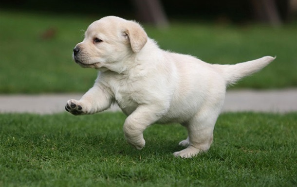

Мабуть, німецьку вівчарку можна назвати найрозумнішою і сміливою з усіх собак. Вірою і правдою понад сто років вона служить людині. Поділяючи з нею життєві радості, ділячи повсякденні труднощі, вівчарка стає справжнім членом сім'ї. Упевнені в собі собаки з міцними нервами, добродушні і щирі. Додавши до цього, твердість характеру і виражені бойові інстинкти, можна зрозуміти, чому собаку із задоволенням беруть на службу в міліцію, армію, як поводирів для незрячих людей.
Для німецької вівчарки нормальною вважається шерсть з підшерстям. На пальцях, лапах, передній стороні кінцівок, голові і внутрішньої частини вух шерсть коротше і не так часто, ніж на шиї. Її чорне забарвлення може бути з мітками від червоно-коричневого, коричневого та жовтого кольорів до світло сірого кольору. Допустимі білі невеликі відмітини на грудях. Вівчарки добре піддаються дресируванню. У них міцна нервова система. Собаки невтомні і працелюбні, сміливі і навіть жорстокі, коли потрібно захищати господаря. У звичайній же ситуації вони приємні і слухняні, уважні і зовсім не агресивні по відношенню до тварин, які проживають з ними, дітей і сторонніх людей.
Французький бульдог характер має сміливий і темпераментний. Він дуже легко сходиться з дітьми, грайливий, не схильний до агресії та злості. Виключно добродушний: якщо у вашому будинку є ще собаки, кішки і інші тварини, то «істинний француз» легко знайде з усіма спільну мову. Не дивіться на його маленький розмір: при будь-якій загрозі вашої безпеки собака не роздумуючи кинеться на ваш захист, навіть якщо їй буде протистояти вівчарка або доберман. При цьому важливо розуміти, що ваш вихованець не відноситься до собак-охоронців, але сам факт готовності до самопожертви вражає. Бульдоги легко піддаються дресурі, швидко вчать прості команди і люблять приносити палицю. При цьому вони постійно намагаються підібрати з землі будь-які залишки їжі, часто риються в смітті, коли не бачить господар. Важливо відразу ж навчити собаку основній команді «Фу!». З усіх собак дрібних порід найлегше подорожувати саме з французьким бульдогом. Поступливий характер, лагідна вдача, послух та покірність роблять його «непомітним» навіть при тривалих поїздках.
Це пухнасті енергійні собачки з округлою головою і широкої плескатої мордою. Вони нагадують кумедних ведмедиків, тому і отримали таку назву - померанські шпіци ведмежого типу. Багато заводчики вважають померанских шпіців з надмірно укороченою мордою ознакою виродження породи - така зміна зовнішності негативно впливає на здоров'я і тривалість життя тварин.У померанського шпіца швидкий метаболізм, тому при появі будь-якого нездужання, потрібно відразу ж йти до ветеринарного лікаря за допомогою. Це дуже вимоглива порода, і ставитися до мініатюрним собакам потрібно, як до маленьких дітей.Їм потрібен спеціальний корм, одяг, амуніцію.
Сенбернар - громіздка і дуже смілива собака. Заслуженою рисою породи можна назвати героїзм. Значні розміри і грізна морда виглядають загрозливо для тих, хто не знайомий з породою. Але насправді сенбернари володіють м'яким характе5ром і доброю вдачею. Спочатку про породу було відомо, що дані собаки рятували людей під час лавини в горах. У сенбернарів добре розвинене почуття шукача. Відомо, що нюх цих тварин дозволяє їм відчути людину під 5-ти метровим шаром снігу і за 3 км (при зустрічному вітрі). А їх потужні і м'язисті лапи міцні і прекрасно розкопують завали. Знайшовши людину, тварина буде облизувати його обличчя, щоб той не втратив свідомість і ляже на потерпілого, щоб зігріти його своїм теплом. Спочатку сенбернари знайшли своє покликання в Альпах. Там вони працювали в легендарному клубі для мандрівників. Взимку туристи проходили по засніжених стежках, як по найкоротшому шляху до Риму.
Сьогодні це одна з найпопулярніших порід собак у всьому світі. Лабрадор – прекрасний мисливець, поліцейський і поводир для людей, позбавлених зору, незамінний друг і нянька для дітей, а також невтомний супутник на прогулянках і зірка різних виставок. Ця собака-універсал володіє добрим і поступливим характером, високим інтелектом і прекрасними здібностями до навчання. До лабрадору не можна ставитися байдуже, адже ці красиві, активні, товариські і ласкаві істоти з чудовим характером, є ідеальними сімейними собаками. Ну а очі лабрадора завжди світяться любов’ю і відданістю до господаря і членам його сім’ї.